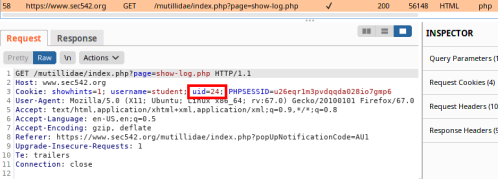

example: Authentication Bypass
Predict Session Token of other accounts
1. Create
2 accounts to a misconfigured Web Application
2. Login with it
3. Go to Burpsuite → Proxy → HTTP History and analyze the cookies
1) First account
 2) Second account
How we can see the value of the cookie
uid increment linearly3. Create a third account
4. Because the value of
uid increase linearly, we can expect that it will be
uid=265. Login with one of the first 2 accounts created, reload and Intercept the page with this cookie and try to change the value of
uid to the value of 26.
26 should be the value of the uid of the third account.
8. Check the user!
BINGO! we have been logged in as the third account!